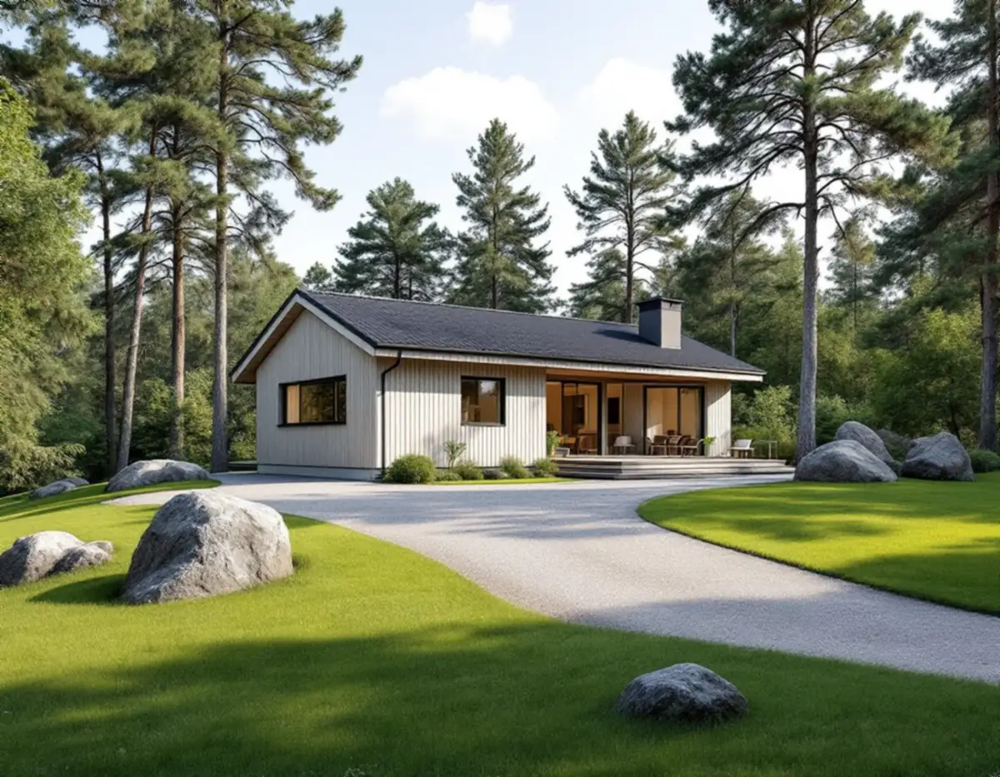
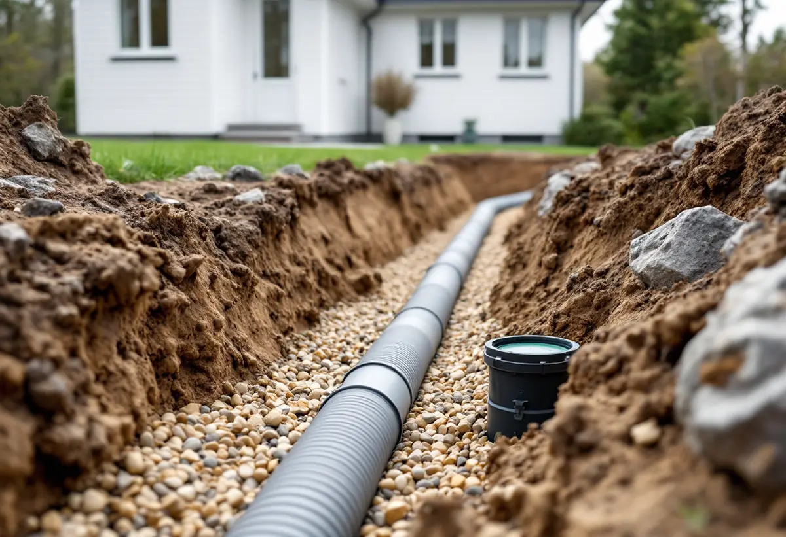

Platsbesök
Vi tittar på huset, tomtens lutning, berg och var vattenmätare och ledningar finns.
Nacka har 16 435 bostäder i småhus enligt SCB:s statistik för 2025. När något nytt byggs på en villatomt blir vatten och avlopp en egen del av projektet: hur ledningarna kopplas, om det krävs en pump och vart regnvattnet tar vägen. Geal Entreprenad AB bygger till, bygger nytt på tomten och gör större ombyggnader som total entreprenad, och här går vi igenom det Nacka vatten och avfall skriver om just det.

Sedan den 1 december 2025 är fler byggåtgärder lovfria, men Nacka vatten och avfall påpekar att det fortfarande krävs anmälan för byggnader med tekniska lösningar som vatten och avlopp. Ändras antalet bostadsenheter på en fastighet som är ansluten till kommunalt VA är fastighetsägaren skyldig att anmäla det. Enligt VA-taxan tas en engångsavgift ut för varje tillkommande bostadsenhet, och anmäls den inte omgående kan dröjsmålsränta tas ut från två månader efter avgiftsskyldigheten.
Med komplementbostadshus menar Nacka vatten och avfall till exempel attefallshus, komplementbostad, kontor, ateljé, gäststuga och liknande. Ledningarna till en sådan byggnad ska kopplas till fastighetens befintliga VA-nät, efter punkten där vattenmätaren sitter i bostadshuset. Därtill tas anläggnings- och brukningsavgift ut enligt den gällande taxan.
För oss betyder det att ledningsdragningen till ett attefallshus eller en gäststuga ritas tidigt, från mätaren i huvudbyggnaden och ut över tomten, och att anmälan till VA-huvudmannen finns med i tidplanen.

På vissa platser i Nacka måste det allmänna ledningsnätet trycksättas för att avloppsvattnet ska komma vidare. Då behövs ett LTA-system, lätt trycksatt avlopp, som består av en brunn, en backventil och en larmenhet tillsammans med en pump som fastighetsägaren lånar av Nacka vatten och avfall. Även där det allmänna nätet har självfall kan en tomt behöva LTA om husets egna ledningar inte kan få självfall. Då äger fastighetsägaren pumpen själv.
Backventilen monteras av fastighetsägaren vid fastighetsgränsen, om den inte redan sitter vid huvudledningen. Larmet ska sitta där det hörs väl i bostaden och inte i tvättstuga, pannrum eller annat stängt utrymme, och el ska dras fram till pumpen. Placeringen bestäms i samråd med Nacka vatten och avfall och ska vara lättillgänglig för underhåll.
Ordningen är viktig. Systemet levereras ungefär två veckor efter beställningen. När ledningarna är anslutna och backventilen installerad ska gropen lämnas öppen tills installationen har besiktigats, vilket vanligen sker inom en vecka. Först när allt i färdiganmälan är godkänt kan vattenmätaren och pumpen sättas upp. I anläggningsavgiften ingår en timmes konsultation om placering och ledningsdragning.
Behövs vatten innan huset är anslutet kan man ansöka om byggvatten, en tillfällig anslutning där förbrukningen mäts med en vattenmätare som hyrs av Nacka vatten och avfall. Ansökan ska göras i god tid innan behovet uppstår.
Vid sprängning, borrning och schaktning samlas ofta regnvatten, inträngande grundvatten och spolvatten i gropen. Det kallas länshållningsvatten, och det är förbjudet att leda bort det till spill- eller dagvattennätet utan samråd med Nacka vatten och avfall. På en bergig tomt där grunden ska sprängas fram tar vi därför upp frågan innan arbetet börjar.
I Nacka har fastighetsägaren ansvar för att ta hand om sitt eget dagvatten. Kommunen arbetar med anvisningen att de första 10 millimetrarna regn som rinner av ska tas om hand nära källan, och det är ett minsta mått. Dag- och dräneringsvatten får inte ledas in på grannens tomt eller ut på gatan, och naturliga flöden som rinner över tomten får inte stoppas.
En tumregel i kommunens vägledning är att det behövs en infiltrationsyta på en till två gånger den hårdgjorda ytan. Ett tak på 150 kvadratmeter kan alltså behöva uppemot 300 kvadratmeter mark. På tät lera eller berg, eller där grundvattnet står högt, föreslår kommunen i stället upphöjda planteringar, gröna tak eller underjordiska magasin.
En ny tillbyggnad eller ett nytt hus ökar de hårda ytorna. Kommunen råder att välja grus, singel, hålsten eller marksten med genomsläppliga fogar till uppfarter och gångar, och att uppfarten ska luta mot grönytor utan kantsten. Det planerar vi in i markritningen. Läs mer om tillbyggnad i Nacka och om hela arbetssättet under byggfirma.
Vi tittar på huset, tomtens lutning, berg och var vattenmätare och ledningar finns.
Vi reder ut om det blir en ny bostadsenhet, om LTA behövs och vad som ska anmälas.
Mark, ledningar, byggnad och ROT-berättigat arbete redovisas var för sig.
Handlingar till kommunen och beställning av LTA eller byggvatten i god tid.
Schakt, ledningar, grund och byggnad samordnas, med besiktning innan gropen fylls igen.
Underlaget till färdiganmälan tas fram och vi går igenom resultatet med dig.
Skatteverket godkänner rotavdrag för markarbeten för att dra in el-, vatten- och avloppsledningar och avloppsbrunnar, även vid indragning av kommunalt VA, och för att dränera husgrunder. En tillbyggnad ger avdrag om den sitter ihop med husets yttervägg till minst 75 procent på någon sida eller har en dörr emellan. Ett helt nytt hus eller en fristående gäststuga ger inget avdrag.
Avdraget är 30 procent av arbetskostnaden, högst 50 000 kronor per person och år och högst 75 000 kronor tillsammans med rutavdrag. Material och resor räknas inte, och VA-huvudmannens avgifter ingår inte. Vi drar avdraget direkt på fakturan.
Berg och lutning styr hur mycket som måste sprängas eller schaktas, och om avloppet kan få självfall eller behöver pump. Längden på ledningarna och hur dagvattnet ska tas om hand spelar också in. Platsbesöket är gratis, och du får ett skriftligt kostnadsförslag.
Total entreprenad för villan.
Byggfirma →Takbyte, takbesiktning och plåtarbeten.
Takläggare i Nacka →Saltsjöbaden, Boo och Älta.
Takrenovering i Nacka →Villastäder, sommarhus och radhus.
Badrumsrenovering i Nacka →Sommarvillor, stugor och villor i Nacka.
Fasadrenovering i Nacka →Villasamhällena vid Saltsjöbanan.
Fönsterbyte i Nacka →Sommarvillor, stugor och hus med källarplan.
Golvläggare i Nacka →Radhuskök, sekelskiftesvillor och vedspis.
Köksrenovering i Nacka →Panelvillor och sommarnöjen i Nacka.
Målare i Nacka →Farledens plåttak och Saltsjöbadens villor.
Plåtslagare i Nacka →Verandor, panel och altaner.
Snickare i Nacka →Strandskydd och villasamhällen.
Tillbyggnad i Nacka →